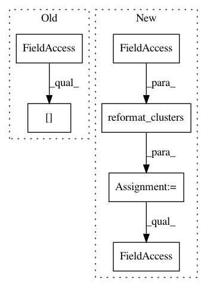

5d8b81e16143d6eea9e86a586fe737854c03c772,linearmodels/tests/panel/test_pooled_ols.py,,test_cov_equiv_cluster_weighted,#Any#,190
Before Change
if isinstance(data.c, np.ndarray):
clusters = data.c[0]
elif isinstance(data.c, pd.Panel):
clusters = data.c.iloc[0].values
else:
clusters = data.c[0].values
After Change
w = mod.weights.dataframe
y.index = np.arange(len(y))
w.index = x.index = y.index
clusters = mod.reformat_clusters(data.vc1)
ols_mod = IV2SLS(y, x, None, None, weights=w)
res2 = ols_mod.fit("clustered", clusters=clusters.dataframe)
assert_results_equal(res, res2)
In pattern: SUPERPATTERN
Frequency: 3
Non-data size: 6
Instances
Project Name: bashtage/linearmodels
Commit Name: 5d8b81e16143d6eea9e86a586fe737854c03c772
Time: 2017-04-07
Author: kevin.k.sheppard@gmail.com
File Name: linearmodels/tests/panel/test_pooled_ols.py
Class Name:
Method Name: test_cov_equiv_cluster_weighted
Project Name: bashtage/linearmodels
Commit Name: 5d8b81e16143d6eea9e86a586fe737854c03c772
Time: 2017-04-07
Author: kevin.k.sheppard@gmail.com
File Name: linearmodels/tests/panel/test_firstdifference_ols.py
Class Name:
Method Name: test_firstdifference_ols_weighted
Project Name: bashtage/linearmodels
Commit Name: 5d8b81e16143d6eea9e86a586fe737854c03c772
Time: 2017-04-07
Author: kevin.k.sheppard@gmail.com
File Name: linearmodels/tests/panel/test_firstdifference_ols.py
Class Name:
Method Name: test_firstdifference_ols